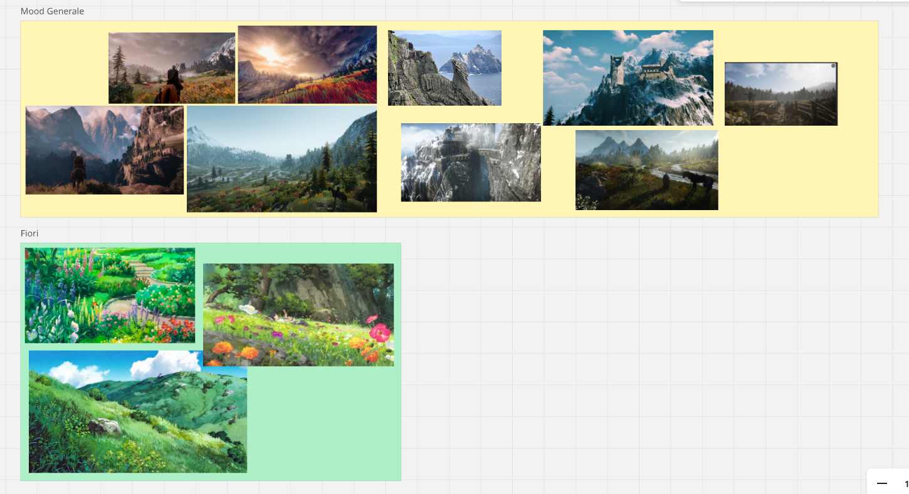
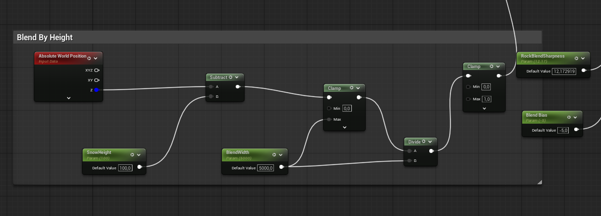
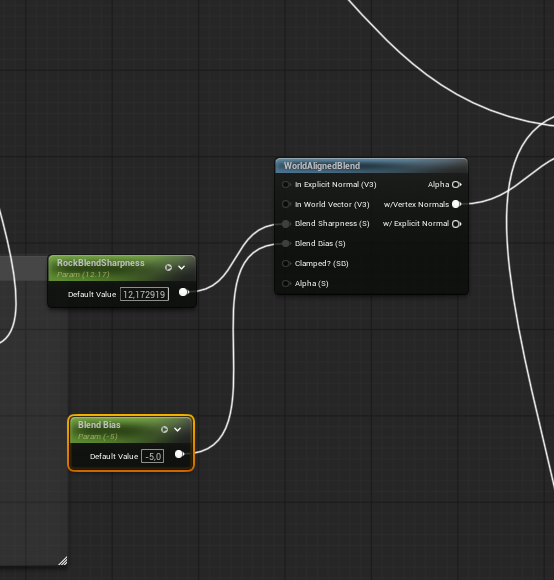
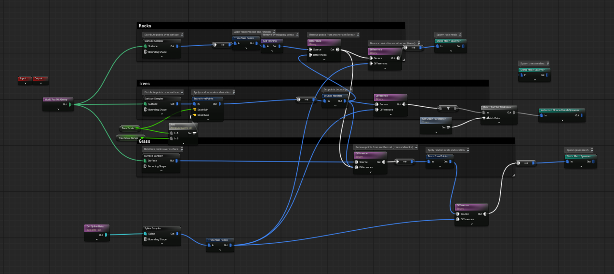
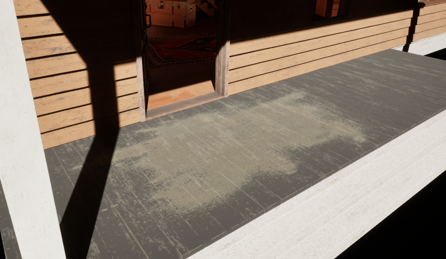
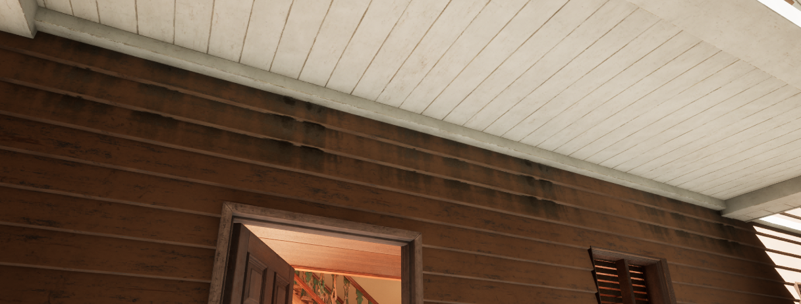
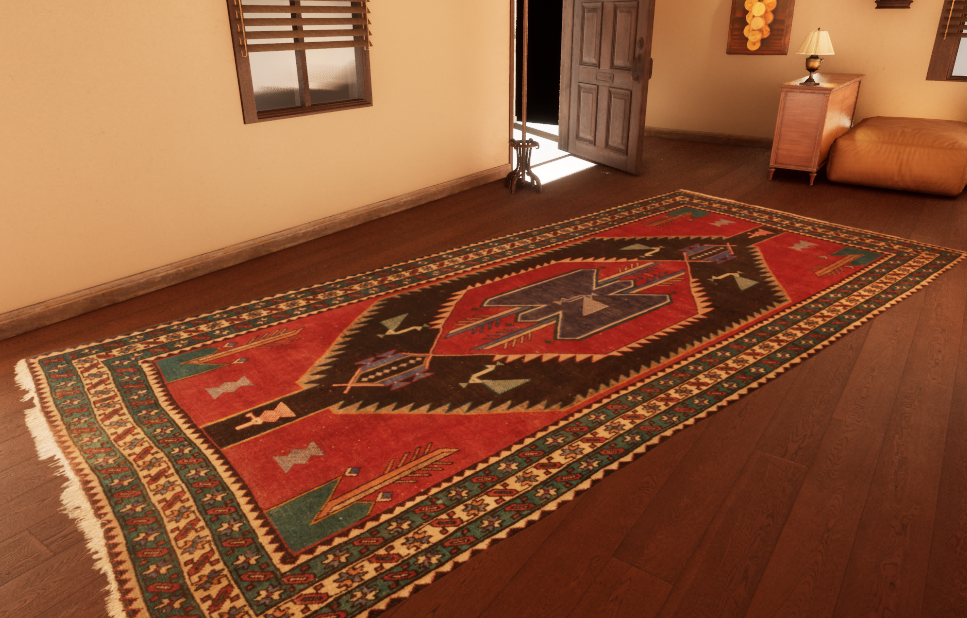
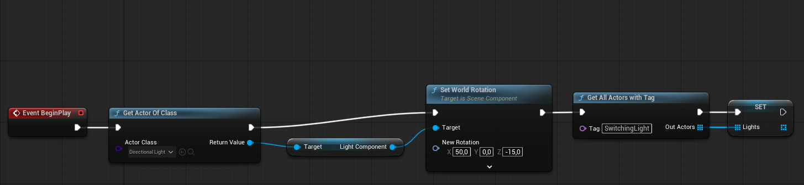
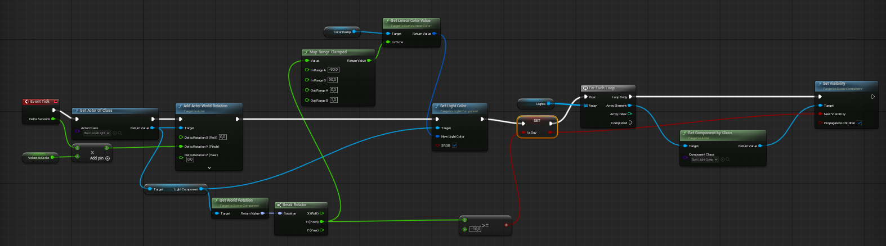

L’obiettivo è stato sviluppare un ambiente 3D in Unreal Engine 5. La scena esplora il contrasto tra una vallata naturale con picchi montuosi innevati (exterior) e una zona inferiore ricca di vegetazione con un’architettura rustica (interior).
Le ispirazioni principali sono state le ambientazioni naturali e fiabesche di Hayao Miyazaki (“Il Castello Errante di Howl”, “La Città Incantata”).
Per l’estetica della flora abbiamo puntato a un effetto luminoso e morbido ispirato all’animazione giapponese, unito al mondo di “The Witcher 3” per l’uso di materiali e dettagli realistici.

La base del mondo è stata costruita concentrandosi su montagne con picchi aguzzi e segni di erosione glaciale.

Node Graph dell’Auto-Material

Node Graph dell’Auto-Material
L’intera vegetazione è gestita tramite PCG, guidato da un rigoroso Spline Workflow per tracciare i confini del prato, i sentieri e l’area della casa.

Gerarchia PCG e Spline
I moduli della casa presentano delle texture mappate in world space, e non in base alle coordinate UV, così da risultare in un asset consistente e che non presenta nella sua architettura soluzioni di continuità.
Decorazioni e usura sono stati “stampati” sulle superfici aggiungendo micro-dettagli realistici senza pesare sulla geometria.



Per gestire l’illuminazione dinamica e il ciclo vitale del mondo abbiamo implementato il plugin Celestial Night and Day Actor. Questo strumento ci ha permesso di creare un ciclo temporale fisicamente accurato, che fa reagire l’intero ambiente (cielo, esposizione, attivazione delle luci) al passare del tempo, automatizzando le transizioni.
Vista l’enorme quantità di asset scaricati per testare la modularità e le variazioni di props, il peso del progetto rischiava di diventare ingestibile. Abbiamo utilizzato il plugin Project Cleaner per individuare ed eliminare tutti gli asset “orfani” (non utilizzati in nessuna mappa), ottimizzando drasticamente lo spazio e mantenendo la repository snella per il controllo versione su Git.
L’atmosfera gioca un ruolo cruciale nella scala della scena.
L’illuminazione non è statica ma è governata da un sistema tramite il quale si definiscono i periodi di giorno/notte dell’ambiente. Con l’arrivo della notte, tutte le luci col tag “SwitchingLight” vengono accese. L’ambiente è vivo, e reagisce ai cambi di orario.


La struttura del progetto riflette l’eterogeneità degli asset integrati, mantenendo una gerarchia pulita per le diverse tipologie di risorse impiegate:
MWLandscapeAutoMaterial, MountainScene.Megaplant_Library, Mobile_Trees, HighPoly_Tree_Model, Tree.RuralHouse, Scene_Saloon.Cigar_room, FreeFurniturePack, Megascans, Scarecrow, Street_Lamp, Windmill, Wall_decoration_of_grapes.Abbiamo combinato asset ad alta fedeltà per ottimizzare i tempi di produzione: